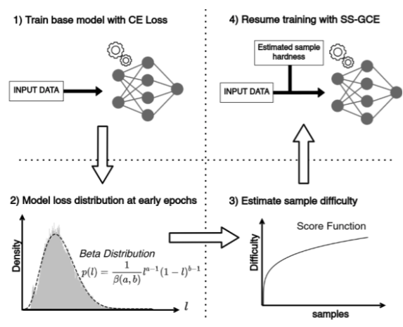
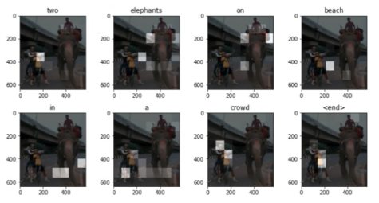

|
Pragati Meshram
I am a first year PhD student at the University of Illinois, Urbana-Champaign, advised by Prof. Suma Bhat. Peviously, I was a software engineer at Uber Bangalore, India. I completed my BTech in Electrical Engineering and Masters in Communication and Signal Processing from the Indian Institute of Technology, Bombay in 2022. My primary interests lie in Natuaral Language Processing, Computer Vision, Artificial Intelligence, and Optimization.
I am fortunate to have worked with Prof. Subhasis Chaudhuri , Prof. Biplab Banerjee and Prof. Amit Sethi at IIT Bombay, and Prof. Beatriz Soret in my internship at Aalborg University, Denmark.
Email /
Resume /
Google Scholar /
LinkedIn
|

|
|
|
Multi-Source Open-Set Deep Adversarial Domain Adaptation
Sayan Rakshit, Dipesh Tamboli, Pragati Meshram, Biplab Banerjee, Gemma Roig, Subhasis Chaudhuri
ECCV, 2020
We proposed a novel adversarial learning driven approach to deal with Multi Source Open-set Domain Adaptation. Modeled a shared feature space for all the domains which explicitly mitigates the domain gap among the source-domains. The adversarial learning strategy is introduced to align the known-class samples from the target-domain with the source data while making the unknown-classes more separable.
|
|

|
Sample Specific Generalized Cross Entropy for Robust Histology Image Classification
Nikhil Cherian Kurian, Pragati Meshram, Abhijeet Patil, Sunil Ptel, Amit Sethi
ISBI, 2021
For training classifiers robust to input and label noise, we proposed a modified and sample-specific version of generalized cross entropy loss. Took advantage of the bootstrapping properties in deep learning models in order to design loss functions that are aware of the difficulty of classifying individual samples, due to either the label noise or the lack of a strong visual signal.
|
|
Uber Technologies Inc
Software Development Engineer ⦅ August 2022 - December 2023 ⦆
Manager: Pradeep Joshi, Bharat Kumar
- Contributed in Tembici-vendor Integration into the Uber app under Micro-Mobility Service.
- Attributed the trip's entry points to improve the user experience by incorporating prelude screen.
- Unified the station and vehicle tap flows and Availed the Micro-Mobility past trip receipts to the users.
|
|
AWL Japan, Inc
AI Reserach Engineer ⦅ March 2022 - May 2022 ⦆
Mentor: Viktor Gaktech
- Researched the methods for detecting the Out-of-Distribution samples.
- Compared three methods, ODIN, Mahalanobis Distance (MD) and Relative Mahalanobis Distance (RMD) to detect the accuracy reduction on the digit dataset.
- Designed the approximate algorithm to alert the system if model does not work nicely (according to customer’s need) on the test datase
|
|
Mercedes-Benz R&D, India
Computer Vision Research Engineer ⦅ July 2021 - September 2021 ⦆
Mentor : Megh Shukla
- Worked on a task of Domain Adaptation for Action Recognition in presence of insufficient source data.
- Implemented a code for paper ’Few-shot Action Recognition with Prototype-centered Attentive Learning and evaluated on HMDB51 and UCF101 dataset.
- Followed the similar method to enrich the source video domain for the benefit of target video domain.
|
|
AWL Japan, Inc
AI Reserach Engineer ⦅ July 2020 - August 2020 ⦆
Manager: Sridhar Babu
ppt
- Solved the problem of inadequate training data for robust recognition of mask wearing facial images.
- Researched methods for Facial Landmark detection, Face Rotation mask wearing face image generation.
- Designed a pipeline for multi view image generation for both mask and non mask data.
- Developed a system for face pose synthesis using advanced generative adversarial networks
|
|
|
Packet Routing
Guide: Beatriz Soret
I simulated packet routing in Satellite constellation using Q-Learning and Dijkstra Algorithm, modelled the arrival of packets to follow a poisson process and introduced Buffering in the model and analyzed and compared the results based on route complexity , end-to-end packet latency, average delay
|
|

|
Image Caption Generator
Guide: Amit Sethi
Built an Image caption generator on two benchmark i.e. datasets Flicker8 and MS COCO. Analysed and compared the performance of basic image caption generator and by adding Bahdanau attention module in it using BLEU and WMD metrics
|
|
|
Multi Label Domain Adaptation
Guide: Prof. Biplab Banerjee
Devised a robust model to perform multi-label classification of target dataset by adapting the knowledge by source samples. Adapted the ideas from previously proposed ideas MLGCN, DANN, and Asymmetric loss Evaluated our network on MS COCO and Pascal VOC dataset for multi label classification.
|
|
|
Pixel-wise Segmentation of Right Ventricle of Heart
Guide: Prof. Amit Sethi
code /
report
Performed Binary Segmentation on MRI of heart to detect the right ventricle contour for medical diagnosis. Achieved the Dice score of 0.85 by comparison of various training losses, architecture & hyper-parameter
|

|
Modality Distillation
Guide: Prof. Biplab Banerjee
Worked on the problem of modality distillation in the absence of bands for the purpose of remote sensing (RS) image classification by exploring the deep generative models. Devised a novel adversarial training capable of learning discriminative feature representation.
|
|
|
Understanding Deep Network's Decision
Guide: Prof. Biplab Banerjee
Implemented Grad-CAM on UC Merced dataset to visualise features in images that caused the activation in particular class by using gradients of last convolution layer. Utilized VGG16 pretrained model to extract features designed dense layer to inculcate output of image.
|
|
|
Maze Solver
Guide: Prof. Shivram Kalyanakrishnan
Modelled a Maze as a Markov Decision Process with appropriate rewards and transitions. Found the Shortest path from a given end to multiple end points in maze using Value Iteration algorithm.
|
|
|
Energy Based out of Distribution Detection
Guide: Prof. Amit Sethi
ppt
Explored different score functions to detect the Out-of-Distribution uncertainty in the testing data. Compared the accuracy obtained by Energy score function with the basic Softmax score function. Obtained 7 percent better accuracy for OOD detection task with Energy scores to that of Softmax scores.
|
|